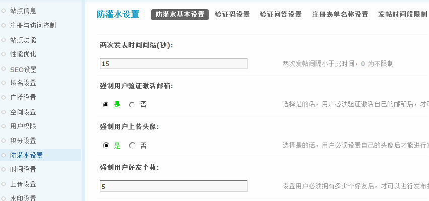
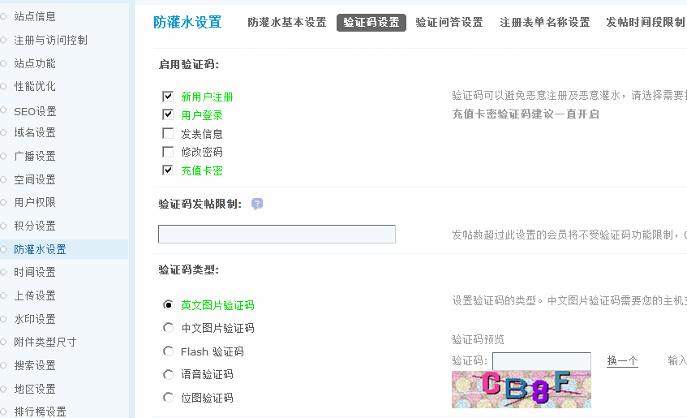
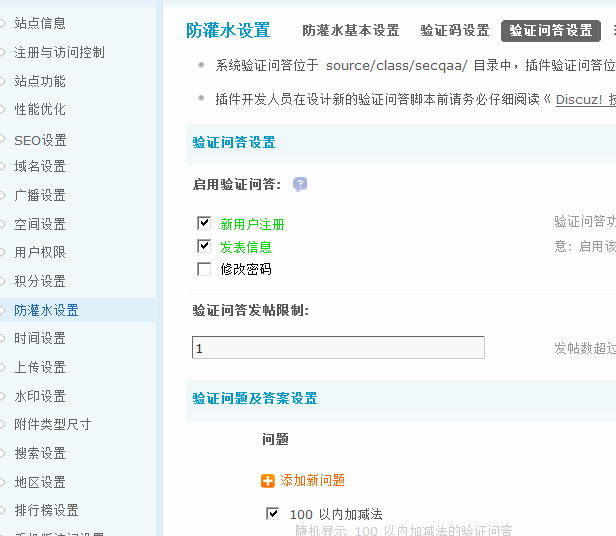
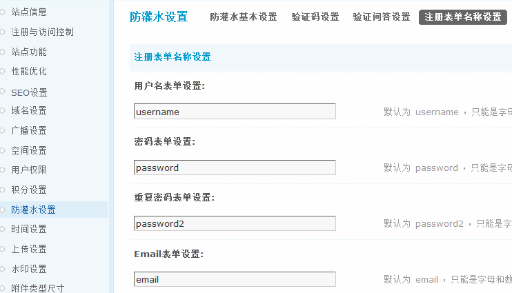
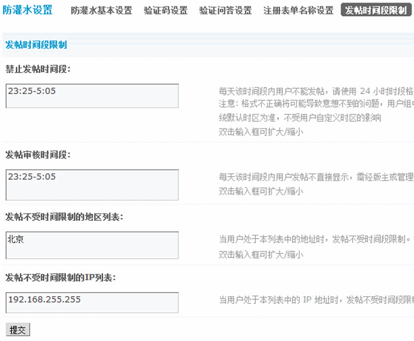

防灌水设置
广告灌水现象在目前各种站点当中都有愈演愈烈的趋势，一方面会严重影响站点内容定位，剔除广告灌水内容又会增加运营成本；另一方面，广告灌水中经常会出现一些和法律法规相抵触的违禁内容，一旦处理不及时会给站点主办方造成负面影响，甚至于网站关闭的严重影响。所以广告灌水和与之相关内容监管一直受到网站主办方的严重关注。
一、防灌水基本设置
可以从两次发表时间间隔设置来限制广告灌水特征用户的快速“屠版”，此项设置是适合给整站所有级别用户的设置，如果时间设置合理对正常用户的影响较小。
默认两次发表时间间隔为 15 秒，可以根据自己站点的实际情况进行修改。
强制新用户验证激活邮箱：选择是的话，用户必须验证激活自己的邮箱后，才可以进行发布操作。
强制新用户上传头像：选择是的话，用户必须设置自己的头像后才能进行发布操作。
强制新用户好友个数：设置用户必须拥有多少个好友后，才可以进行发布操作。
上面的设置也都是系统可以自动完成判断的防灌水功能，虽然会对用户体验产生影响，但又因为仅对新注册和初级用户产生影响，所以还是可以视发展运营阶段灵活运用。
二、验证码设置
验证码一般是中文，英文的静态或者动态图片，是一种混合了数字或符号的代码，人可以通过抽象思维辨识，而机器抽象识别起比较困难，一般是防止有人利用机器自动批量注册、暴力破解方式进行不断的登陆、灌水的一种技术措施。Discuz! 系列程序一直对验证码不断的优化和升级，以应对道高一尺魔高一丈的局面。
1)启用验证码
分别包括新用户注册、用户登录、发表信息、修改密码以及充值时开启验证码。我们在实际运营时推荐仅在新用户注册和用户登录时填写注册码，好处是对老用户影响最小，对用户体验的影响也在最小和最精准的新用户范围内。
2)验证码发帖限制
为了区分新老用户，就需要在“验证码发帖限制”设置最少发帖数，一般以个位数比较合适。
3)验证码类型
包括中/英文图片验证码、Flash 验证码、语音验证码和位图验证码。
中文图片验证码需要你的主机支持 FreeType 库。需要手动上传字库文件至 static/image/seccode/font/ch/ 目录下，站点将随机使用里面的字体文件作为验证码的文字。
要显示 Flash 验证码，建议你的主机支持 Ming 库以提高安全性。
开启语音验证码需要输入你听到的字符进行验证。
开启中/英文图片验证码和Flash 验证码时选择填写验证码图片宽度、验证码图片高度等项目，具体如下：
4)验证码图片宽度
验证码图片的宽度，范围在 100～200 之间。
5)验证码图片高度
验证码图片的高度，范围在 50～80 之间。
6)图片打散
打散生成的验证码图片，输入打散的级别，0 为不打散。
7)随机图片背景
选择“是”将随机使用 static/image/seccode/background/ 目录下的 JPG 图片作为验证码的背景图片，选择“否”将使用随机的背景色。
使用图片作为验证码的背景，把制作好的 JPG 图片上传到 static/image/seccode/background/ 目录下，站点将随机使用里面的图片作为验证码的背景。
8)随机背景图形
选择“是”将给验证码背景增加随机的图形。
9)随机 TTF 字体
选择“是”将随机使用 static/image/seccode/font/en/ 目录下的 TTF 字体文件生成验证码文字，选择“否”将随机使用 static/image/seccode/gif/ 目录中的 GIF 图片生成验证码文字。中文图片验证码将随机使用 static/image/seccode/font/ch/ 目录下的 TTF 字体文件，无需进行此设置。
使用 TTF 字体作为验证码文字，把下载的 TTF 英文字体文件上传到 static/image/seccode/font/en/ 目录下，站点将随机使用里面的字体文件作为验证码的文字。
10)随机倾斜度
选择“是”将给验证码文字增加随机的倾斜度，本设置只针对 TTF 字体的验证码。
11)随机扭曲
选择“是”将给验证码文字增加随机的扭曲，本设置只针对 TTF 字体的验证码。
12)随机颜色
选择“是”将给验证码的背景图形和文字增加随机的颜色。
13)随机大小
选择“是”验证码文字的大小随机显示。
14)文字阴影
选择“是”将给验证码文字增加阴影。
15)GIF 动画
选择“是”验证码将显示成 GIF 动画方式，选择“否”验证码将显示成静态图片方式。
在验证码类型的选择上，由于广告灌水程序技术也在不断升级，所以验证码的设置上也要尽量选择电脑尚不容易辨识的“GIF动画”，“随机扭曲”等设置。
也可以自己制作图片做为验证码文字，图片必须包含字符“2346789BCEFGHJKMPQRTVWXY”24 个字符，且必须为 GIF 透明图片、背景透明、前景黑色，黑色为图片的第一个索引色。图片大小不限制，但建议宽度不大于验证码宽度的 1/4，高度不大于验证码高度。制作完毕后在 static/image/seccode/gif/ 下创建一个新的子目录，目录名任意，把制作完毕的 24 个 GIF 图片上传到新子目录下。
三、验证问答设置
验证问答和验证码比较类似，随机产生，而且需要思考解答，能够对利用灌水程序造成一些麻烦。验证问题应该言简意赅，没有歧义，正常人都能够正确作答。
验证问题及答案设置：
这里可以使用默认的100 以内加减法，也可以增加新问题，建议你经常更换新增加的问题以防止被猜测。
四、注册表单名称设置
在注册表单名称设置方面，通过个性化注册表单名称的设置，也让灌水程序不能肆意妄为。
1)用户名表单设置
默认为 username ，只能是字母和数字的组合，必须以字母开头。修改后的表单名会使得注册机更难发挥作用。
2)密码表单设置
默认为 password ，只能是字母和数字的组合，必须以字母开头。 修改后的表单名会使得注册机更难发挥作用。
3)重复密码表单设置
默认为 password2 ，只能是字母和数字的组合，必须以字母开头。 修改后的表单名会使得注册机更难发挥作用。
4)Email表单设置
默认为 email ，只能是字母和数字的组合，必须以字母开头。 修改后的表单名会使得注册机更难发挥作用。
五、发帖时间段设置
发帖时间段的设置包括禁止发帖和发帖审核的时间段设置，在每日的深夜至凌晨阶段设置禁止发帖或发帖审核，可以有效地控制站内的垃圾信息泛滥，有调查表明，发帖机多在此时段进行广告帖轰炸。 对于地方站点来说，如果希望本地会员发帖不受时间段的设置限制，可以在不受时间限制的地区列表和不受时间限制的IP列表中，填写好当地的地名和IP段即可。